1004E30 COMPONENTS TRANSFER for half-finished engine
- Path
- Procedures > 10 ENGINE UNIT > 1004 ENGINE AND POWER UNIT > 1004E engine assembly inspection and repairs > 1004E30 COMPONENTS TRANSFER for half-finished engine
- Kind
- repair procedure (removal / refitting; the operation number is the code)
- Applies to
- engines: 1.6 16v; all production periods
- Interactive page
- https://sloeber94.github.io/elrnDB-fMltpl/en/#/2892332
Applies to: engines: 1.6 16v; all production periods
 Removing
Removing
 Refitting
Refitting1004D10 power unit (manual gearbox), removed, remove and re-build
1. Disconnect electrical connections (1a), (1b), (1c), (1d), (1e), (1f), (1g), (1h), (1i) and (1l).
2. Open the wiring duct (2a) and remove the engine wiring (2b).
 | Name | Connector |
|---|---|---|
1a | Integrated air temperature sensor |
| Name | Connector |
|---|---|---|
1b | Idle actuator |
| Name | Connector |
|---|---|---|
1c | Throttle position sensor |
| Name | Connector |
|---|---|---|
1d | Engine coolant temperature sensor |
| Name | Connector |
|---|---|---|
1e | Ignition coil |
| Name | Connector |
|---|---|---|
1f | Injector |
| Name | Connector |
|---|---|---|
1g | Alternator |
| Name | Connector |
|---|---|---|
1h | Brake fluid level sensor (switch) |
| Name | Connector |
|---|---|---|
1i | RPM sensor |
| Name | Connector |
|---|---|---|
1l | Detonation sensor |
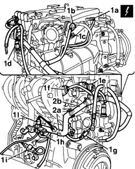
Applies to: engines: 1.6 16v; all production periods
1. Undo the belt plastic guard retaining bolts.
2. Remove the power steering pump belt guard.
3. Unscrew nut (3a) and adjustment screw (3b) to slacken belt tension. Then remove belt (3c).
4. Undo the two bolts fixing the power assisted steering pump.
5. Remove the power assisted steering pump (5a) complete with mounting brackets together with the drive belt (5b).
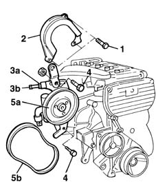
Applies to: engines: 1.6 16v; all production periods
1. Disconnect the supply connections for the spark plugs.
2. Undo the bolts fixing the ignition coils from the mounting bracket.
3. Remove the ignition coils complete with spark plug high tension leads.
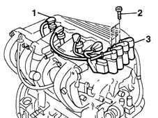
Applies to: engines: 1.6 16v; all production periods
1. Undo the bolts (1a) fixing the oil filler pipe and the bolts (1b) fixing the oil dipstick.
2. Disconnect the oil vapour inlet pipe.
3. Remove the engine oil filler pipe.
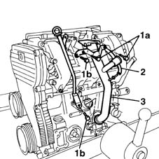
Applies to: engines: 1.6 16v; all production periods
1. Undo the fixing nuts (1a) and remove the protection (1b).
2. Disconnect the flexible engine coolant pipe from the rigid section fixed to the butterfly casing.
3. Undo the bolts fixing the air intake chamber to the inlet manifold.
4. Undo the bolts (4a) fixing the intake chamber to the camshaft housing, then remove the intake chamber (4b).
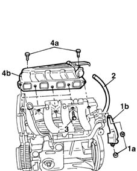
Applies to: engines: 1.6 16v; all production periods
1. Unscrew the retaining nuts.
2. Remove the wiring duct.
3. Undo the fixing bolts (3a) and remove the inlet manifold (3b) together with the oil dipstick (3c).
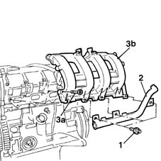
Applies to: engines: 1.6 16v; all production periods
1. Undo the bolts.
2. Remove the timing belt single shield.
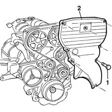
Applies to: engines: 1.6 16v; all production periods
1. Fit the engine flywheel retaining tool.
2. Undo the nut securing the crankshaft pulley.
3. Remove the crankshaft pulley.
 | Name | Country |
|---|---|---|
1 | Counter-torque | 1.860.846.000 |
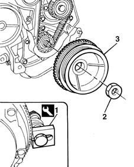
Applies to: engines: 1.6 16v; all production periods
1. Unscrew the retaining nuts.
2. Remove the exhaust manifold heat shield.
3. Unscrew the retaining nuts.
4. Remove the exhaust manifold together with the mounting bracket for the power assisted steering pump.
5. Recover the exhaust manifold seal.
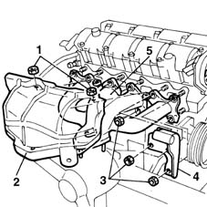
Applies to: engines: 1.6 16v; all production periods
1. Undo the bolts fixing the water pump mounting to the cylinder block/crankcase.
2. Remove the water pump complete with filler pipe.
3. Undo the fixing bolts (3a) and remove the alternator mounting (3b).
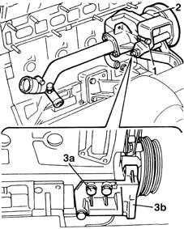
Applies to: engines: 1.6 16v; all production periods
1. Fit the engine flywheel retaining tool.
2. Undo the fixing bolts (2a) and remove the clutch disc (2b).
| Name | Country |
|---|---|---|
1 | Counter-torque | 1.860.846.000 |
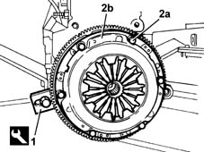
Applies to: engines: 1.6 16v; all production periods
1. Undo the bolts.
2. Remove the engine flywheel together with the flywheel lock positioned previously.
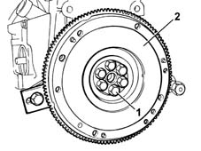
Applies to: engines: 1.6 16v; all production periods
1. Undo and remove the engine oil pressure sender unit.
2. Undo the fixing bolt (2a) and remove the oil vapour separator (2b).
3. Undo the fixing bolt (3a) and remove the detonation sensor (3b).
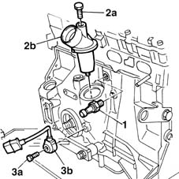
Applies to: engines: 1.6 16v; all production periods
Refitting
RemovingRemove the half complete engine to be replaced from the overhauling stand.
Remove the engine mounting brackets and transfer them to the new half complete engine.
Using a suitable tool, lift the engine and fix it to the rotating stand to fit the missing component.
Fit the detonation sensor on the cylinder block/crankcase.
Position the vapour separator and fix it using the bolt.
Fit the engine oil pressure sender unit/
Fit the engine flywheel retaining tool.
| Name | Country |
|---|---|---|
- | Counter-torque | 1.860.846.000 |
Fit the engine flywheel and tighten the fixing bolts to torque.
 | Fastening | Component | Ø | Value (daNm) |
|---|---|---|---|---|
- | Bolt | FLYWHEEL | M10 | 8.3 |
Align the driven disc for fitting the clutch assembly using the centering tool.
| Name | Country |
|---|---|---|
- | Clutch centering | 1.870.447.000 |
Fit the water pump complete with rigid pipe.
Tighten the bolts securing the water pump to the crankcase to torque.
| Fastening | Component | Ø | Value (daNm) |
|---|---|---|---|---|
- | Bolt | COOLANT PUMP | M6 | 2.5 |
Fit the alternator mounting bracket and tighten the fixing bolts to torque.
| Fastening | Component | Ø | Value (daNm) |
|---|---|---|---|---|
- | Bolt | ALTERNATOR SUPPORT | M6 | 2.5 |
Fit the exhaust manifold to the cylinder head.
Fit the power assisted steering pump mounting bracket on the exhaust manifold.
Tighten the nuts fixing the exhaust manifold to the cylinder head .
| Fastening | Component | Ø | Value (daNm) |
|---|---|---|---|---|
- | Bolt | EXHAUST MANIFOLD/S | M6 | 3 |
Fit the exhaust manifold heat shield.
Tighten the nuts fixing the bulkhead.
Fit the crankshaft pulley with its phonic wheel.
Tighten the pulley retaining nut to torque.
| Fastening | Component | Ø | Value (daNm) |
|---|---|---|---|---|
- | Nut | CRANKSHAFT PULLEY | M20 | 19 |
Remove the flywheel lock.
Fit the timing belt single shield.
Fit the oil dipstick at the same time as the inlet manifold.
Fit the wiring duct on the inlet manifold.
Tighten the lower bolt fixing the oil dipstick and the nuts fixing the inlet manifold to torque.
| Fastening | Component | Ø | Value (daNm) |
|---|---|---|---|---|
- | Nut | INLET MANIFOLD | M8 | 2.5 |
Fit the air intake casing.
Tighten the bolts and nuts securing the casing to the cylinder head extension.
| Fastening | Component | Ø | Value (daNm) |
|---|---|---|---|---|
- | Bolt | INLET AIR DUCT | M7 | 1.5 |
Tighten the bolts and nuts to the intake manifold.
Fit the shield and fix it using the nuts.
Connect the coolant pipe.
Fit the engine oil filler pipe.
Tighten the fixing bolts and connect the oil vapour inlet pipe.
Fit the ignition coils on the mounting bracket, tightening the bolts to torque.
| Fastening | Component | Ø | Value (daNm) |
|---|---|---|---|---|
- | Bolt | IGNITION COIL/REEL | M6 | 0.9 |
Connect the supply connections for the coils to the spark plugs.
Position the power assisted steering pump complete with supports.
1. Fit the drive belt on the water pump and power assisted steering pump pullies.
2. Acting on the adjustment nut and bolt, tension the power assisted steering pump drive belt.
3. Using a dynamometer, check that the belt tension is correct.
4. Tighten the bolts fixing the power assisted steering pump brackets to torque.
Fit the pump plastic shield.
 | Measurement | Value | |
|---|---|---|---|
- | Power steering pump new belt tension (daN) | 32 - 45 |
| Fastening | Component | Ø | Value (daNm) |
|---|---|---|---|---|
- | Nut | POWER STEERING PUMP SUPPORT/BRACKET | M10 | 5 |
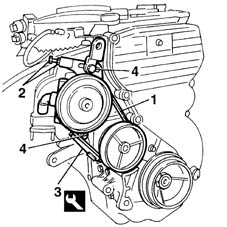
Applies to: engines: 1.6 16v; all production periods
Position the electrical wiring and connect the electrical connections.
| Name | Connector |
|---|---|---|
- | Detonation sensor |
| Name | Connector |
|---|---|---|
- | RPM sensor |
| Name | Connector |
|---|---|---|
- | Brake fluid level sensor (switch) |
| Name | Connector |
|---|---|---|
- | Alternator |
| Name | Connector |
|---|---|---|
- | Injector |
| Name | Connector |
|---|---|---|
- | Ignition coil |
| Name | Connector |
|---|---|---|
- | Engine coolant temperature sensor |
| Name | Connector |
|---|---|---|
- | Throttle position sensor |
| Name | Connector |
|---|---|---|
- | Idle actuator |
| Name | Connector |
|---|---|---|
- | Integrated air temperature sensor |
Position the part of the wiring concerned in the duct.
1004D10 power unit (manual gearbox), removed, remove and re-build
Topics linked from this page (11)
- 1004D10 power unit (manual gearbox), removed, remove and re-build
- A10 Alternator
- A30 Ignition coil
- K30 Brake fluid level sensor (switch)
- K43 Integrated air temperature sensor
- K45 Engine coolant temperature sensor
- K46 RPM sensor
- K50 Detonation sensor
- K56 Throttle position sensor
- N70 Injector
- N74 Idle actuator